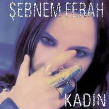
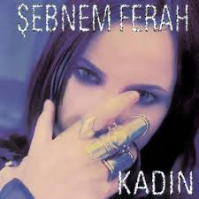
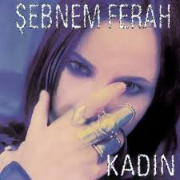

Albümler
 



Şebnem Ferah, 12 Nisan 1972 tarihinde Yalova’da doğmuştur. Türk rock müziğinin en önemli kadın vokallerinden
biri olan Ferah, güçlü sesi, derin sözleri ve sahne performansıyla yıllar boyunca geniş bir hayran kitlesi
edinmiştir.
Müziğe olan ilgisi küçük yaşlarda başlamış, lise yıllarında gitar çalarak ilk adımlarını atmıştır.
Üniversite eğitimi için İstanbul’a taşınmış, İstanbul Üniversitesi’nde ekonomi eğitimi alırken müzik
kariyerini de şekillendirmeye başlamıştır. Bu dönemde kurduğu Volvox adlı sadece kadınlardan oluşan rock
grubuyla dikkatleri üzerine çekmiştir. Daha sonra grup dağılmıştır.Şebnem Ferah’ın tarzı; rock, alternatif
rock ve senfonik rock arasında gezinen, zaman zaman sertleşen, zaman zaman da derin duygusallık barındıran
bir yapıdadır. Şarkı sözlerinde aşk, kayıp, kadın kimliği, hayal kırıklıkları ve özgürlük gibi temaları
işler. Kendine has lirik dili ve güçlü vokali sayesinde Türkiye’de rock müziğin kadın temsili açısından öncü
bir isim olmuştur.
Konser performansları da en az albümleri kadar etkileyicidir. Özellikle senfonik konserleri, klasik müzik
ile rock’ı buluşturan özel projeler arasında yer alır.
